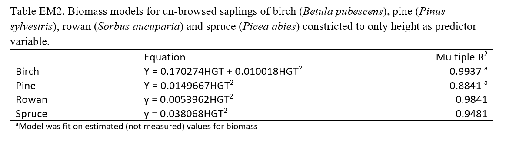
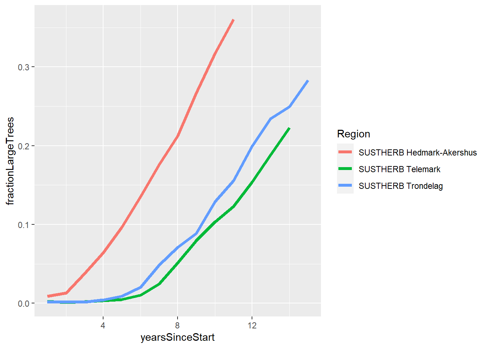
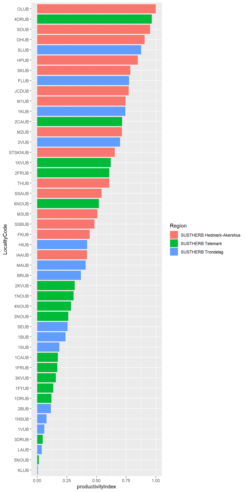

Productivity index
Productivity Index
Background and rationale
Site productivity is very relevant predictir variable for our analyses. A productivity index was used in two previous papers:
- Cervid Exclusion Alters Boreal Forest Properties with Little Cascading Impacts on Soils
- Pervasive moose browsing in boreal forests alters successional trajectories by severely suppressing keystone species
The index is based on the annual biomass increments inside the exclosires. The allometric models are published in the supplementary information in the first paper. The first paper only had the Trøndelag sites, and therefore it also was able to combine the annual biomass increment with the canopy cover values to get an even better index. The second paper included the Telemark site, but there has not been calculated any productivity indeces for the Hedmark-Akershus sites.
Goal - To calculate a productivity index for the three regions, using all the years of data.
Allometric models
allo_birch <- function(hgt) {0.170274*hgt + 0.010018*hgt ^2}
allo_pine <- function(hgt) {0.0149667*hgt^2}
allo_rowan <- function(hgt) {0.0053962*hgt^2}
allo_spruce <- function(hgt) {0.038068*hgt^2}Tree density monitoring
The number of stems in each height class (1-7) is recorded in the field, annually, since the start of the experiement. Height class 7 include all trees above 3 meters. We therefore have no precice height data for the tree community as more and more trees grow above 3 meters. First we will therefore explore the data and see how many years of data we can calculate the productivity index with.
dat <- read_excel("data/DensityAnno2023.xlsx")dat %>%
mutate(yearsSinceStart = case_when(
# Check !! Hedmark Akershus sites were initiated at different times
Region == "SUSTHERB Hedmark-Akershus" ~ Year -2012,
Region == "SUSTHERB Telemark" ~ Year -2009,
Region == "SUSTHERB Trondelag" ~ Year -2008)) %>%
filter(Treatment == "Unbrowsed") %>%
mutate(heightGroup = case_when(
HeightClass == 7 ~ "large",
HeightClass < 7 ~ "small"
)) %>%
summarise(.by = c(Region, yearsSinceStart, heightGroup),
sum = sum(Quantity)) %>%
pivot_wider(names_from = heightGroup,
values_from = sum) %>%
mutate(fractionLargeTrees = large/(large+small)) %>%
ggplot()+
geom_line(aes(x = yearsSinceStart, y = fractionLargeTrees, colour = Region),
linewidth=1.5)
The fraction of trees in height category 7 varies with species and with region. I need a principle that is the same for all species and regions. If I wanted to use the same principle as in the previous two studies, and convert height categories to a numerical value in order to use the allomteric models and predict biomass, that could mean either underestimating the biomass by assuming all trees in height category 7 is 3-4m, or to reduce the time series and only look at the first few years of data when height class 7 made up a smaller fraction of the total and so could be ignored. Neither of these options are any good I think.
New approach
I will try and use the fraction of large trees as the productivity index. I can extract the fraction at year 11, when we have data from all regions. With this approach we don’t actually need the allometric models.
dat %>%
mutate(yearsSinceStart = case_when(
Region == "SUSTHERB Hedmark-Akershus" ~ Year -2012,
Region == "SUSTHERB Telemark" ~ Year -2009,
Region == "SUSTHERB Trondelag" ~ Year -2008)) %>%
filter(Treatment == "Unbrowsed",
yearsSinceStart == 11) %>%
mutate(heightGroup = case_when(
HeightClass == 7 ~ "large",
HeightClass < 7 ~ "small"
)) %>%
summarise(.by = c(Region, LocalityCode, yearsSinceStart, heightGroup),
sum = sum(Quantity)) %>%
pivot_wider(names_from = heightGroup,
values_from = sum) %>%
mutate(fractionLargeTrees = large/(large+small),
productivityIndex = fractionLargeTrees/max(fractionLargeTrees)) %>%
arrange(productivityIndex) %>%
mutate(LocalityCode = fct_inorder(LocalityCode)) %>%
ggplot()+
geom_bar(aes(x = LocalityCode, y = productivityIndex, fill = Region),
stat = "identity")+
coord_flip()
Then I export the index as a data file so that we can import merge it with the original dataset in the main analyses quarto file.
dat %>%
mutate(yearsSinceStart = case_when(
Region == "SUSTHERB Hedmark-Akershus" ~ Year -2012,
Region == "SUSTHERB Telemark" ~ Year -2009,
Region == "SUSTHERB Trondelag" ~ Year -2008)) %>%
filter(Treatment == "Unbrowsed",
yearsSinceStart == 11) %>%
mutate(heightGroup = case_when(
HeightClass == 7 ~ "large",
HeightClass < 7 ~ "small"
)) %>%
summarise(.by = c(Region, LocalityCode, yearsSinceStart, heightGroup),
sum = sum(Quantity)) %>%
pivot_wider(names_from = heightGroup,
values_from = sum) %>%
mutate(fractionLargeTrees = large/(large+small),
productivityIndex = fractionLargeTrees/max(fractionLargeTrees)) %>%
arrange(productivityIndex) %>%
mutate(LocalityCode = fct_inorder(LocalityCode)) %>%
left_join(dat, by=join_by(LocalityCode), multiple = "first") %>%
select(LocalityName, productivityIndex) %>%
saveRDS("data/productivityIndex.RDS")How to use the index
Here is how you can get the productivity index into the full, original tree density data set to be used in analyses:
# read data
productivityIndex <- readRDS("data/productivityIndex.RDS")
# assuming 'dat' is the name of the full density data set, use this code to paste the productivity index values into it
dat2 <- dat %>%
left_join(productivityIndex, by=join_by(LocalityName))